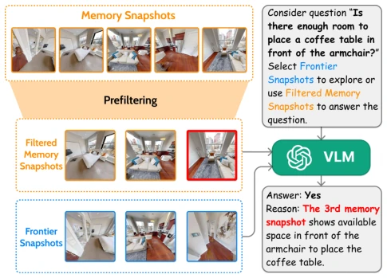
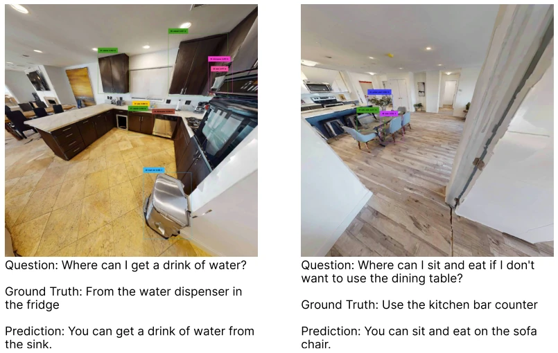
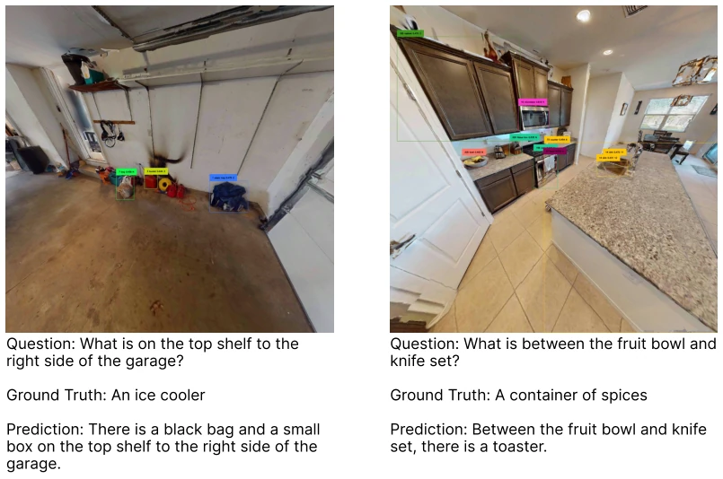
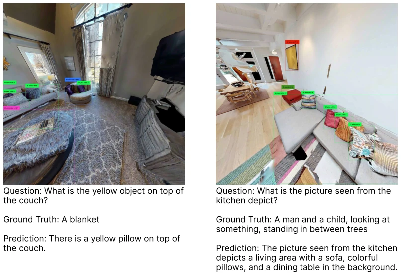
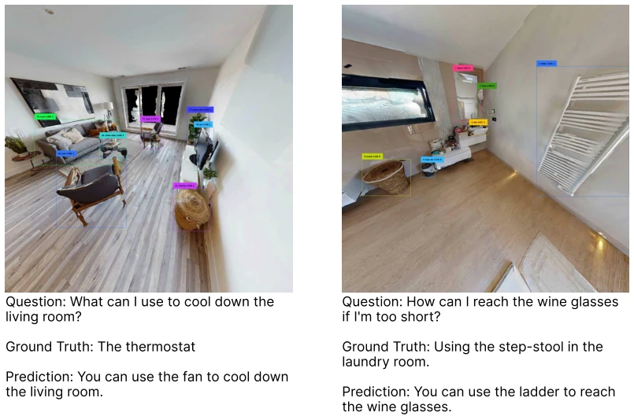
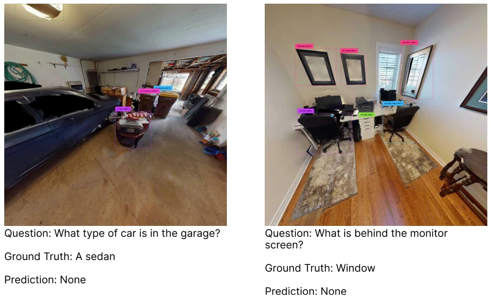
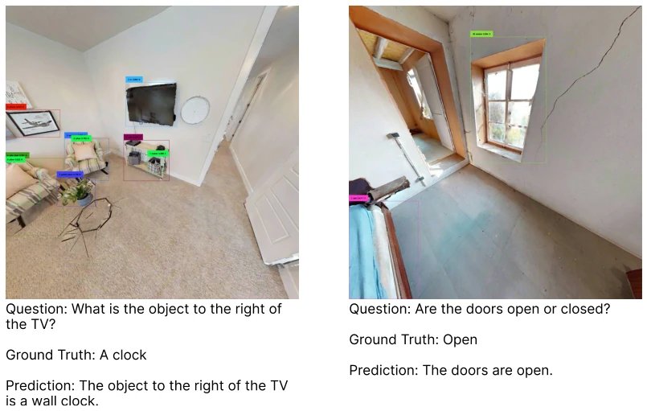

Figure 1. With 3D-Mem, explored regions are represented by a set of Memory Snapshots capturing clusters of co-visible objects, i.e., the objects observable in a single image observation, along with their spatial relationships and background context, as shown in the bottom-left example. Unexplored regions are represented by navigable frontiers along with image observations, referred to as Frontier Snapshots.
Figure 2. The memory aggregation process of 3D-Mem. At each step t, the object set Ot is first updated using the object-wise update pipeline introduced in Section 3.1. The newly detected objects and the updated existing objects are then jointly clustered into new memory snapshots using co-visibility clustering (Algorithm 1), which are used to update the memory snapshot set St.

Figure 3. 3D-Mem as visual input for the VLM in embodied question answering. The VLM first retrieves relevant memory snapshots with prefiltering, then utilizes the frontier snapshots and memory snapshots to perceive the scene and reason about the em- bodied questions.
Figure 4. Frame Efficiency of 3D-Mem on EM-EQA. LLM- Match Score vs. Average Number of Frames for 3D-Mem and Multi-Frame both using GPT-4o
其他图片Other Figures

Figure 5. Failure Case 1: Some questions in A-EQA are vague and may have multiple reasonable answers.

Figure 6. Failure Case 2: Due to limitations in perception capabilities and image resolution, the VLM cannot provide the correct answer even when the memory snapshot is correctly chosen.

Figure 7. Failure Case 3: In some cases, the VLM selects an entirely incorrect memory snapshot and produces unreasonable answers.

Figure 8. Failure Case 4: Incorrect labels predicted by the object detector can mislead the VLM. Although the VLM can often ignore such errors, in certain cases, these misclassifications cause confusion.

Figure 9. Failure Case 5: Some target objects are not added to the scene graph due to missed detections by the object detector. The memory snapshot shown above is where the target object should have been detected and assigned to.

Figure 10. A similar scenario to Figure 9, where the target objects are not detected. However, as they are still visible in other memory snapshots, the VLM still successfully answers the questions.